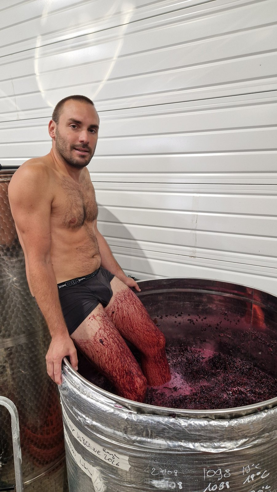

Les étapes d'un millésime, en images
Cette page suit, geste après geste, la naissance d'un vin : des vendanges à la mise en bouteille. Elle s'enrichira au fil des prochaines vendanges — de nouvelles photographies viendront compléter le reportage au fur et à mesure.
Les vendanges
Les raisins sont vendangés à la main, parcelle par parcelle, à pleine maturité. Le premier geste du millésime — et le plus décisif.
Le tri & l'encuvage
Les grappes sont triées, égrappées ou conservées entières selon la cuvée, puis encuvées grain à grain.

Le foulage
Le foulage aux pieds, geste ancestral hérité des vendanges d'autrefois, permet d'extraire tout en douceur la couleur et les tanins, sans écraser les pépins.

La fermentation
Portée par les levures indigènes, la fermentation démarre spontanément. Le marc est régulièrement remué, à la main, pour accompagner l'extraction.
Le pressurage
Une fois la fermentation achevée, le vin de goutte et le vin de presse sont séparés avec soin, pressurage lent et mesuré.
L'élevage
Le vin s'affine ensuite en cave partagée à Chassagne-Montrachet, le temps que chaque cuvée trouve son équilibre.
La mise en bouteille
Dernière étape avant que le vin ne trouve sa table : la mise en bouteille, avec le minimum d'intervention.